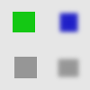
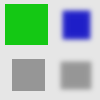

This filter works on color borders. It spreads pixels that differ in a specified way from their neighboring pixels.
- Presets, “Input Type”, Clipping, Blending Options, Pré-visualização, Merge filter, Split view
-
![[Nota]](images/note.png)
Nota Essas opções são descritas em Seção 2, “Recursos comuns”.
- Modo
-
Os exemplos serão gerados a partir desta imagem:

- Mais branco (valor maior)
-
Os pixels serão propagados a partir de pixels de maior valor (mais claros) por cima de pixels de menor valor. Então, as áreas claras ficarão maiores.
Figura 17.88. Mais branco

Bright pixels have been propagated to dark pixels in the four directions: top, bottom, right and left. Filter applied several times to increase effect.
- Mais preto (valor menor)
-
Os pixels serão propagados de pixels de valores menor (mais escuros) para pixels de valor maior. Então, áreas mais escuras vão ficar maiores.
Figura 17.90. Apenas para baixo

O mesmo que acima, mas somente a direção Para baixo estava selecionada.
- Valor médio para os picos
-
Nas bordas entre os limites selecionados, a média de ambos os valores será propagada.
Figura 17.91. Valor médio para os picos

Uma borda fina de uma cor temporária foi adicionada aos objetos. Ela não é visível em torno de objetos com bordas suaves.

Green area zoomed x800. A thin border (one pixel wide) has been added. Its value is the average between gray (90%) and green (78%): (90 + 78) / 2 = 84.
- Color to peaks
-
As áreas propagadas serão preenchidas com a cor de frente da Caixa de ferramentas.
A color selector opens, with a color picker.
Figura 17.92. Color to peaks

In this example, the selected color is Red. A thin border, one pixel wide, red, is added around objects. With smoothed objects, this border is located at the furthest limit of smoothing. Here, another border appears inside. This is an artifact due to the small size of the object which makes the smoothing area of opposite sides to overlap.
- Only color
-
Only areas with the selected color will propagate. With this option, soft and fuzzy edges don't propagate well.
Figura 17.93. Only color

In this example, the selected color is that of the green object. After applying filter several times, the green area is clearly enlarged.
- Mais opaco, Mais transparente
-
Esses comandos funcionam como “Mais branco” e “Mais preto”, só que afetam o canal Alfa. Áreas mais opacas (ou transparentes)serão propagadas por cima de áreas menos opacas (transparentes). Essas opções dependem da camada ter um canal Alfa.
Figura 17.94. Mais opaco

Camada original, com um fundo transparente.

O filtro aplicado diversas vezes: a área verde, opaca, aumentou.
- Limite de baixo, Limite mais alto
-
A pixel will be propagated (spread) if the difference in value between the pixel and its neighbor is no smaller than the lower threshold and no larger than the upper threshold.
- Taxa de propagação
-
Isso é a quantidade de propagação. Quanto maior o valor, mais forte a propagação será.
- Para cima, Para a esquerda, Para a direita, Para baixo
-
Você pode selecionar uma ou mais direções.
- Propagando canal de valor
-
If checked, the pixel's color channels (gray channel on grayscaled images) will be propagated. The option is checked by default, of course.
- Propagando o canal alfa
-
If checked, the pixel alpha value will be propagated, otherwise the pixel will get the alpha of the neighboring pixels.